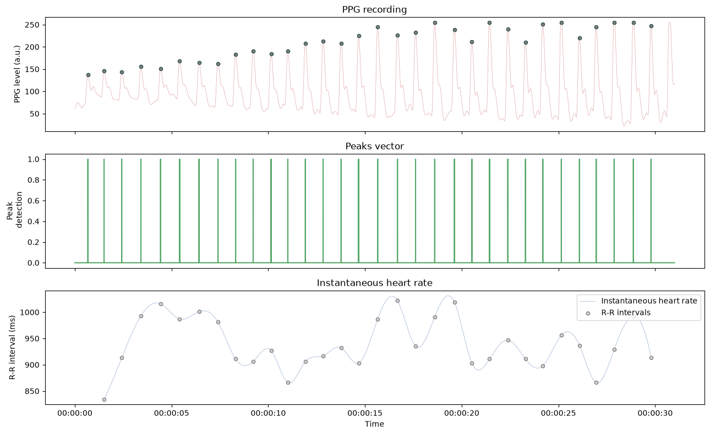

Instantaneous Heart Rate#
This example show how to record PPG signals using the Nonin 3012LP Xpod USB pulse oximeter and the Nonin 8000SM ‘soft-clip’ fingertip sensors. Peaks are automatically labelled online and the instantaneous heart rate is plotted.
# Author: Nicolas Legrand <nicolas.legrand@cfin.au.dk>
# Licence: Apache-2.0
import matplotlib.pyplot as plt
import numpy as np
import pandas as pd
from systole import serialSim
from systole.detection import ppg_peaks
from systole.plots import plot_raw, plot_rr
from systole.recording import Oximeter
Recording#
For the demonstration purpose, here we simulate data acquisition through the pulse oximeter using pre-recorded signal.
ser = serialSim()
If you want to enable online data acquisition, you should uncomment the following lines and provide the reference of the COM port where the pulse oximeter is plugged in.
import serial
ser = serial.Serial('COM4') # Change this value according to your setup
# Create an Oxymeter instance, initialize recording and record for 30 seconds
oxi = Oximeter(serial=ser, sfreq=75).setup()
oxi.read(30)
Reset input buffer
<systole.recording.Oximeter at 0x7f5d4e19dcd0>
Plotting#
signal, peaks = ppg_peaks(signal=oxi.recording, sfreq=75)
fig, ax = plt.subplots(3, 1, figsize=(13, 8), sharex=True)
plot_raw(signal=signal, show_heart_rate=False, ax=ax[0])
times = pd.to_datetime(np.arange(0, len(peaks)), unit="ms", origin="unix")
ax[1].plot(times, peaks, "#55a868")
ax[1].set_title("Peaks vector")
ax[1].set_ylabel("Peak\n detection")
plot_rr(peaks, input_type="peaks", ax=ax[2])
plt.tight_layout()
